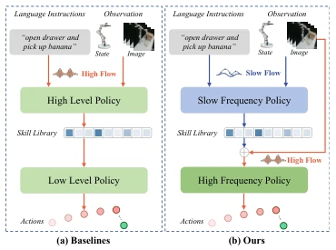
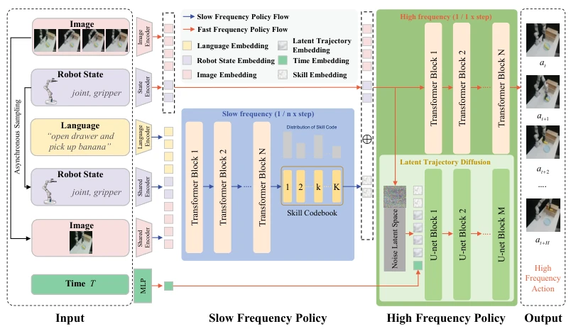
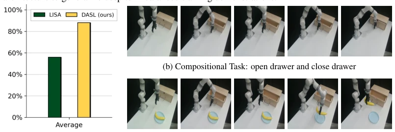
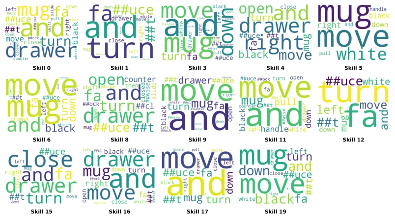
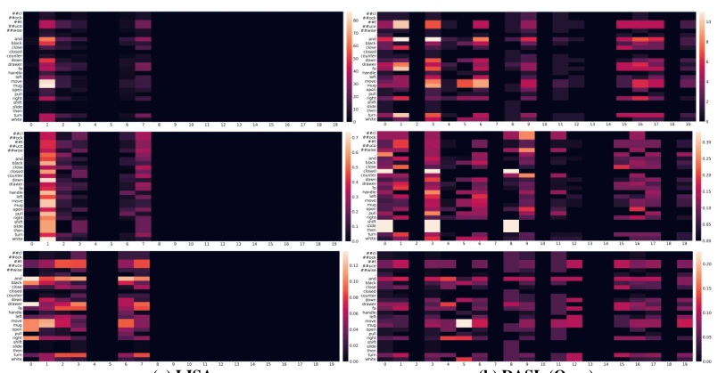
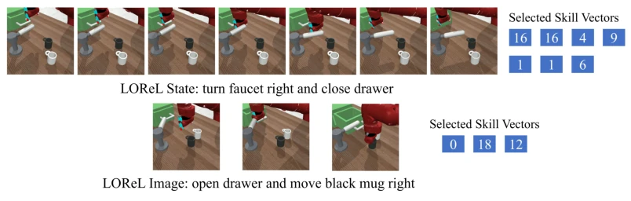
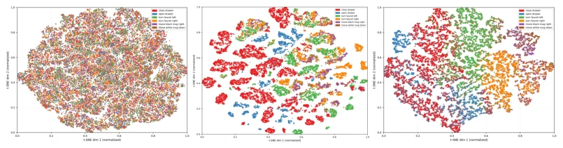
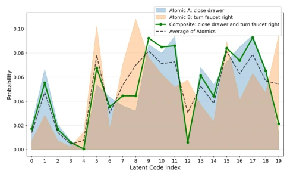
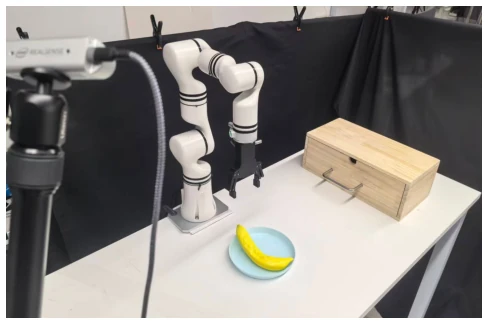
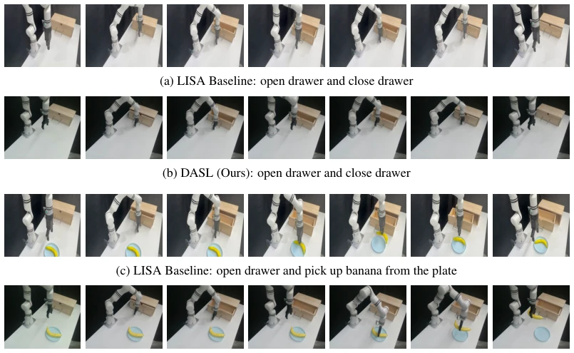

Dual-Process Atomic Skill Learning: Decoupling Semantic Reasoning and Real-Time Control
Jun Chen, Erdent Bao, Wenlong Dong, Jierui Liu, Qi Cai, Hao Wan abspdf
论文点评Review
这篇论文给“双系统”认知理论贴了个金，把慢思考（语义规划）和快思考（动作执行）强行拆开了。DASL 的核心在于“异步”，高慢低快，试图解决 LISA 那种联合训练导致的代码本坍塌（Codebook Collapse）。虽然用扩散模型做训练正则化是个骚操作，推理时直接砍掉，省了算力，但本质上还是离线模仿学习。别指望它在线进化，毕竟没提 RL 微调。对于需要实时控制的机器人来说，这种“先想后动”的架构确实稳，但泛化性还是得看数据质量。总的来说，是个稳健的改进，但离“通用机器人”还差得远，别被标题里的“Dual-Process”忽悠瘸了，其实就是分层 IL 的变种，不过确实解决了训练不稳定的痛点。
This paper puts a gloss on the "dual-system" cognitive theory, forcibly decoupling slow thinking (semantic planning) and fast thinking (action execution). The core of DASL lies in "asynchrony", high-level slow and low-level fast, attempting to solve the codebook collapse (Codebook Collapse) caused by joint training like in LISA. Although using diffusion models for training regularization is a clever maneuver, directly cutting it off during inference saves compute, but essentially it is still offline imitation learning. Do not expect online evolution, after all no RL fine-tuning is mentioned. For robots requiring real-time control, this "think-then-act" architecture is indeed stable, but generalization still depends on data quality. Overall, it is a robust improvement, but far from "general-purpose robots", do not be misled by "Dual-Process" in the title, it is actually a variant of hierarchical IL, but it does solve the pain point of training instability.
研究动机Motivation
语言条件模仿学习（IL）想让机器人听懂人话干活，但多步任务太难。现有分层方法如 LISA [8] 试图分解任务，却因高层技能推理与底层动作生成耦合过紧，导致训练不稳定。这种端到端联合训练常引发代码本坍塌，即少数技能索引被过度使用，其他索引闲置，严重损害泛化能力。虽然 SkillDiffuser [17] 等尝试用扩散模型，但推理慢。DASL 受 Kahneman 双系统理论启发，认为解耦慢速语义推理和快速实时控制能缓解干扰。现有方法缺乏显式的异步机制，迫使语义更新与高频控制步长对齐，引入噪声。因此，需要一种能平衡语义一致性与执行效率的架构，避免 LISA 在 LOReL 等基准上表现不如非分层方法 Lang DT 的尴尬，实现更稳定的技能习得。
Language-conditioned imitation learning (IL) aims to make robots understand human speech to work, but multi-step tasks are too difficult. Existing hierarchical methods like LISA [8] attempt to decompose tasks, but due to high-level skill reasoning and low-level action generation being too tightly coupled, leading to training instability. This end-to-end joint training often triggers codebook collapse, meaning a few skill indices are overused, other indices idle, seriously damaging generalization ability. Although SkillDiffuser [17] etc. attempt to use diffusion models, but inference is slow. DASL is inspired by Kahneman's dual-system theory, believing that decoupling slow semantic reasoning and fast real-time control can mitigate interference. Existing methods lack explicit asynchronous mechanisms, forcing semantic updates to align with high-frequency control steps, introducing noise. Therefore, an architecture that balances semantic consistency and execution efficiency is needed, avoiding the awkward situation of LISA performing worse than non-hierarchical methods like Lang DT on benchmarks like LOReL, achieving more stable skill acquisition.

Figure 1: Baselines vs. our dual-process control. (a) Baselines: synchronous high-frequency skill and action generation. (b) Ours: asynchronous decoupling, with slow-frequency skill reasoning and high-frequency action execution.
DASL is an asynchronous hierarchical framework, containing slow-frequency policy, fast-frequency policy, and asynchronous coordination. Slow-Frequency Policy is based on Option Transformer, processing language and observations at low resolution, predicting continuous latent skills, then mapping to a discrete codebook via vector quantization (VQ), ensuring skill interpretability. High-Frequency Policy uses Decision Transformer, generating actions at the original control frequency, conditioned on discrete skills. The key innovation lies in the Latent Diffusion Module during training, it is used only during the training phase, regularizing the latent trajectory manifold via denoising loss, forcing skills to align with trajectory distributions, preventing index collapse, removed during inference to ensure real-time performance. Asynchronous coordination mechanism allows high-level to reason at 1/n steps, low-level to execute at 1 step, decoupling time scales. Total loss function includes action prediction, VQ commitment, and diffusion loss, jointly optimized. This design lets high-level focus on semantic abstraction, low-level focus on precise control, avoiding high-frequency noise polluting high-level semantics, achieving decoupling of semantic reasoning and motion control. Diffusion module uses 1D U-Net to predict noise, using cosine schedule to add noise, ensuring latent space structure is reasonable.

Figure 2: Overview of DASL, an asynchronous hierarchical imitation learning framework. The high-level policy operates at a slow timescale to generate discrete semantic skills from language instructions and sparse observations, while the low-level policy executes skill-conditioned actions at a fast timescale. A latent diffusion module regularizes the latent trajectory space during training and is removed at inference for efficient real-time control.
Evaluated on four simulation benchmarks (LOReL, Franka Kitchen, CALVIN, BabyAI) and real robots (Realman). Metrics include success rate, N-rate, K-rate. DASL significantly outperforms LISA [8] and SkillDiffuser [17] on LOReL, especially on generalization tasks with unseen instructions. Ablation studies prove asynchronous architecture and diffusion regularization are indispensable, using diffusion alone cannot solve the frequency mismatch problem. In real experiments, DASL outperforms LISA on both atomic and composite tasks, demonstrating robustness. Although parameter count is comparable to LISA, inference frequency reaches 13Hz, better than SkillDiffuser's 2Hz. But limited by offline data, lacking online adaptation ability, future needs to combine with RL. On Kitchen benchmark, DASL's K-rate reaches 1.71, significantly higher than LISA's 1.29, proving its robustness under image observations. Success rate reaches 48.05% on CALVIN, better than HULC's 32.50%.

Figure 5: Real-world quantitative and qualitative results for DASL. (a) compares average success rates. (b)-(c) display successful key-frame sequences for complex compositional tasks.

Figure 14: Word cloud of skills learned in LOReL Sawyer (state) compositional tasks.
其他图片Other Figures

Figure 13: Qualitative comparison of learned skill representations for LISA and DASL on LOReL Sawyer tasks. The rows display code correlation (Word × Skill), option frequency (normalized row- wise), and word frequency (normalized column-wise) for a size-20 skill set. Column (a) illustrates significant index collapse in LISA, where activations are limited to a small subset of indices like 1 and 7. In contrast, the DASL heatmaps in column (b) show marked sparsity and distinct activation regions across the codebook. These disentangled associations between linguistic tokens and atomic skills highlight the superior interpretability and utilization of our framework. (Zoom in for best view).

Figure 15: Visualize two LOReL episodes with aligned keyframes and the discrete skill index selected at each timestep.

Figure 16: Evolution of latent space representations across different stages. t-SNE visualizations illustrate the progression from (a) raw expert states with high entanglement to (b) continuous skill primitives prior to vector quantization (Pre-VQ), and finally to (c) our fused trajectories. The transi- tion demonstrates how the DASL framework effectively transforms diffuse continuous embeddings into semantically distinct and well-separated clusters, significantly enhancing representational dis- criminability.

Figure 17: Visualization of Latent Skill Distributions. Comparing skill codebook usage between composite and atomic skills.

Figure 18: Real-world experimental setup. We evaluate the proposed DASL framework on a Realman robot. The setup involves various interactive objects, such as a drawer and a banana on a plate, to validate the performance of the model across atomic and composite manipulation tasks.

Figure 19: Qualitative comparison on compositional tasks. While LISA fails via incomplete closing (a) and unstable grasping (c), DASL (b, d) ensures precise execution and robust skill transitions.